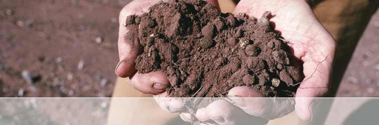
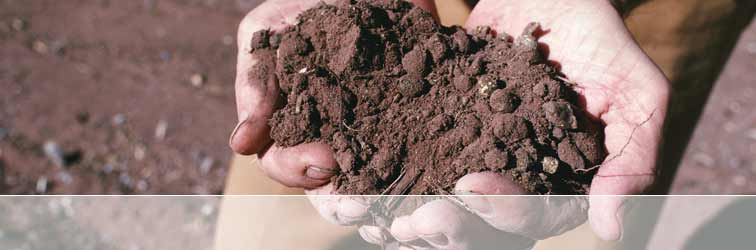

CHIEF WINE GROWER
As a graduate from the prestigious Roseworthy College (Adelaide University) in 1991 alongside the general manager of Tamar Ridge Estate in Tasmania Will Adkins and Wine Purchaser for Qantas Airlines Peter Nixon, Leigh has become one of the Clare Valley's top wine growers. With 15 years experience working vintages for Leasingham, Stanley and Annie's Lane Quelltaler he has been acknowledged with a number of prominent accolades for his wines.
Following his decision in 1993 to purchase 45 hectares in the Sevenhill Ranges in the heart of the Clare Valley and plant Shiraz and Sangiovese, his ability to produce wines that strongly reflect varietal and regional character have seen his wines challenge some of Australia's Top producers.
As a fifth generation member of a Blyth Plains family which once specialised in mixed farming, Leigh brings to Robertson of Clare Wines extensive knowledge of the Clare Valley and its surrounding areas. In 1997 Leigh was acknowledged for his deeply complex and well structured Cabernet Sauvignon at the Adelaide Wine Show, awarded the Professor A J Perkins Trophy and Top Gold for his 1995 Eldredge Cabernet Sauvignon. In doing so he left a wealth of Australia's top Cabernet producers and boutique vineyards envious of his achievement. Recently Decanter Magazine (UK) voted the Eldredge 2000 Cabernet Sauvignon in the Top 5 from 130 Australian entries as the best Australian Cabernet Sauvignon. In 1993 along with Andrew Pikes, Leigh planted the first Sangiovese vines in the Clare and in 1998 produced his first commercially available Sangiovese. His appreciation for old world styles and winemaking techniques coupled with his ability to inject innovation and capitulate the terroir has carried him through to becoming a top Clare Valley wine grower.
In the 2004 Great Australian Shiraz Challenge, out of 264 entries and judged by the highly credentialed and experienced panel of James Halliday, John Duval, and Stephen Henschke, the Eldredge Vineyards 2002 Blue Chip Shiraz was awarded a Gold Medal beating such highly acclaimed names such as Kilikanoon, Wolf Blass Grey Label, Fox Creek and Grant Burge among others. Significantly, this Clare Valley red was a gold medal winner at the Melbourne Wine Show in 2003 and also figured in the highly sort after taste-off for the Jimmy Watson Trophy.
In 2004 the Eldredge Blue Chip Shiraz was also chosen amongst 500 entries by leading wine writer and Chief wine tasting panelist for Qantas Airlines Len Evans, as the Shiraz to be proudly served on all Qantas International Business Class flights in 2005.
Awards and Accolades for Eldredge Vineyards Clare Valley, South Australia
• 1997 Adelaide Wine Show
The Professor A J Perkins Trophy and Top Gold 1995 Eldredge Cabernet Sauvignon
• London International Wine Challenge 2003
2000 Cabernet Sauvignon - Silver Medal
• Decanter Magazine
2000 Cabernet Sauvignon awarded **** (four stars)
and in the top four out of 130 Australian Cabernet Sauvignon tasted
• Melbourne Wine Show 2003
Gold - 2002 Blue Chip Shiraz (Final 18 taste off for the Jimmy Watson Trophy)
Gold - 2002 Blue Chip Shiraz (Taste Off for the Jimmy Watson Trophy)
• Clare Valley Wine Show 2003
Gold - 2002 Blue Chip Shiraz (in taste off for Trophy Best Dry Red )
• Cairns Wine Show 2004
Top Gold - 2002 Blue Chip Shiraz
Trophy - Best Red Wine of Show
Trophy - Best Wine of Show
Contact: winegrower@rocwines.com.au